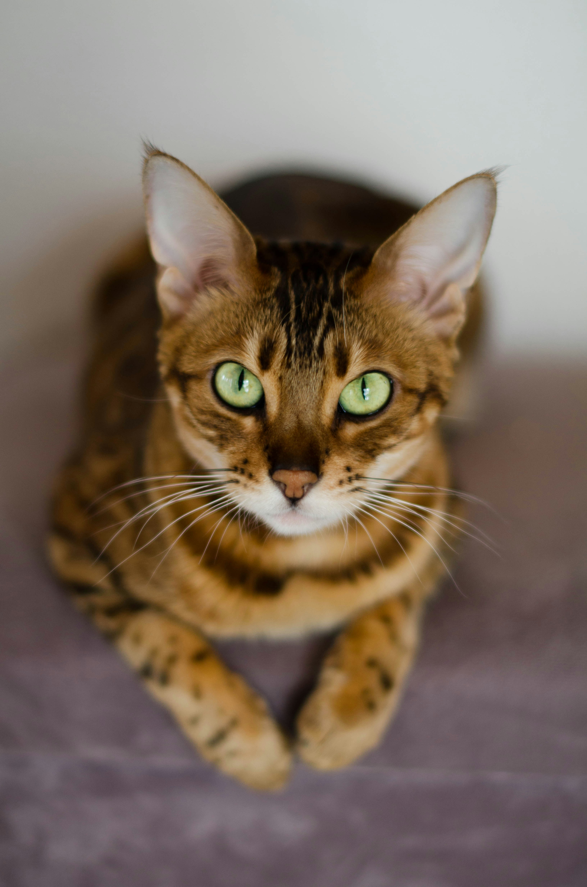

Bengal

Photo by Nika Benedictova on Unsplash
History
The Bengal cat breed was developed in the 1960s by a breeder named Jeremy H. Green. He wanted to create a cat that resembled a small leopard. To achieve this, he crossed an Asian leopard cat with an American Shorthair. The result was the Bengal cat, which has a spotted coat and striking green or gold eyes. The breed was recognized by The International Cat Association in 1991 and by the Cat Fanciers' Association in 1994.
Appearance and Temperament
The Bengal cat has a sleek, short coat that is spotted. Their eyes are typically green or gold in color. They are a medium-sized, sturdy breed with a friendly and affectionate temperament. They are known for being social and enjoy being around people. They are also intelligent and can be trained to do tricks or use a litter box. They are generally good with children and other pets, making them a popular choice for families.
Source: https://cats.com/cat-breeds/bengal